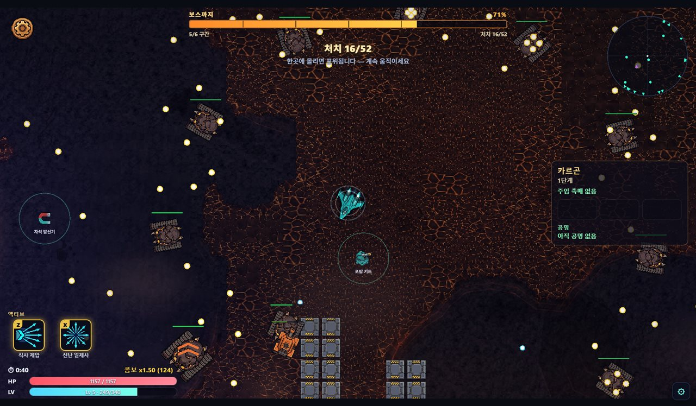
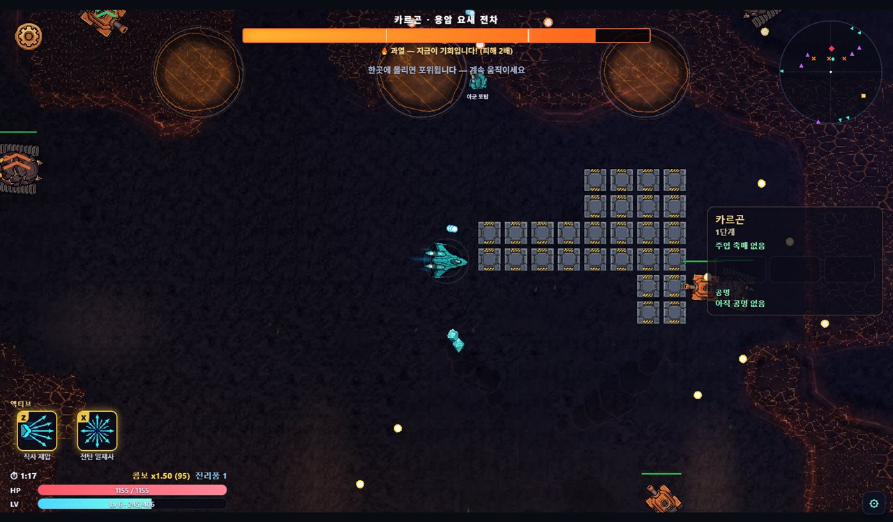
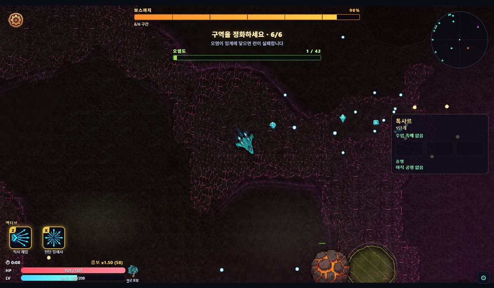
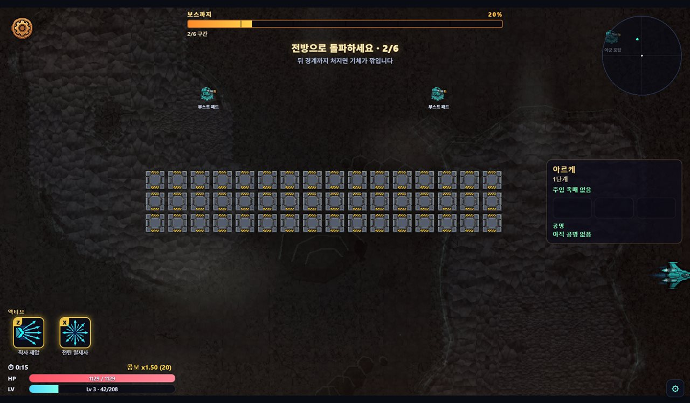
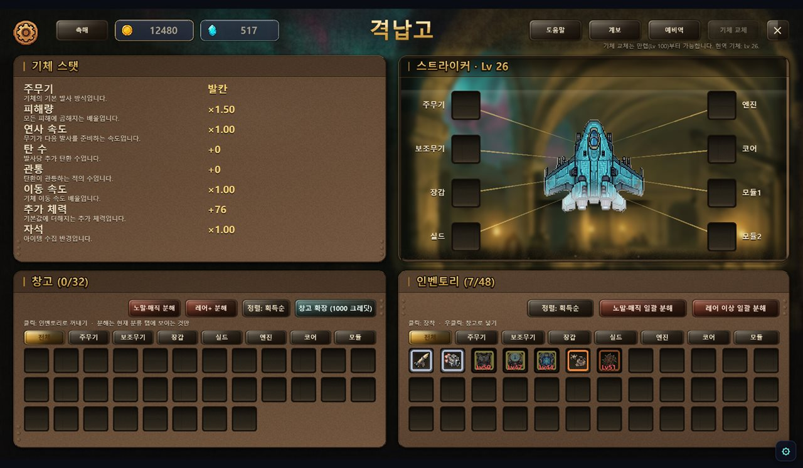
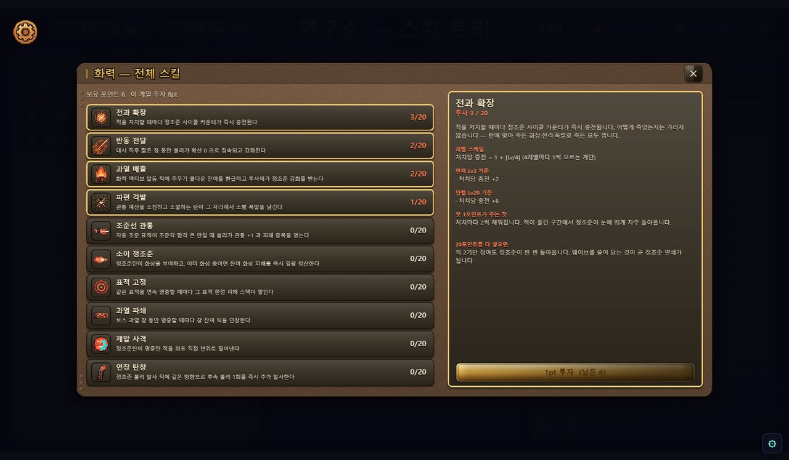
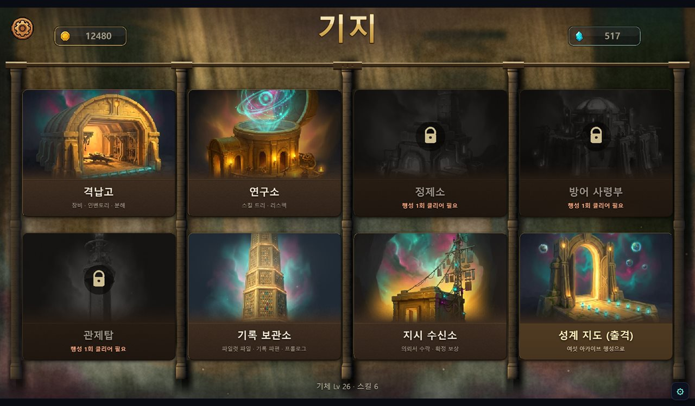
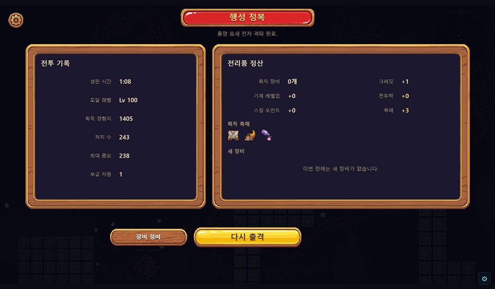

NAN 2026 Game×AI 해커톤 사전 과제 · 개인 참가 김민석 (v0o0v2@gmail.com) · 2026-08-10
Planet Blitz (플래닛 블리츠)
"행성을 침략해 장비를 파밍하고, 그 힘으로 상위 랭커의 기지를 뚫어 자리를 빼앗는 탄막 슈팅."
탑다운 탄막 슈팅 × 디아블로식 장비 파밍 × 비동기 PvP 래더가 한 루프로 맞물린 웹 게임입니다. 공격은 자동, 플레이어의 몫은 회피와 포지셔닝 — 손은 쉽고 빌드는 깊습니다.
1인 · 26일 · 사람이 타이핑한 게임 코드 0줄. 1,392 커밋 · 498 PR · 자동 테스트 8,676건 전량 통과 — 지금 브라우저에서 바로 플레이되는 실서비스 중인 온라인 게임입니다. AI를 어떻게 지휘해 여기까지 왔는지는 「AI 활용 기술 문서」가 증명합니다.
| 항목 | 링크 |
|---|---|
| 플레이 · 심사용 데모 (로그인 불필요) | (데모 빌드 링크 — 배포 후 기재) |
| 플레이 · 정식 (계정 연동) | https://v0o0v.github.io/planet-blitz/ |
| 플레이 영상 (YouTube, 30~60초) | (영상 링크 — 업로드 후 기재) |
| 소스 코드 (public) | https://github.com/v0o0v/planet-blitz |
정식 빌드에 구글 로그인을 필수화한 것은 래더 자리를 빼앗는 비동기 PvP가 계정 없이는 성립하지 않기 때문입니다. 심사 편의를 위해 같은 소스에서 서버 설정만 뺀 무로그인 데모 빌드를 함께 제공합니다 — 네트워크 계층이 설정 부재 시 자동으로 no-op이 되도록 처음부터 설계돼 있어, 코드 분기 없이 같은 소스에서 두 빌드가 나옵니다.
WASD 이동, Space 대시만 기억하면 됩니다
카르곤 · 아레나 서바이벌 — 처치 할당 HUD, 우상단 레이더, 하단 액티브 스킬
카르곤 보스전 — 패턴 직후 5초 "과열 창"(받는 피해 2배)이 공격 타이밍을 만든다
톡사르 · 오염 확산 모드 — 같은 게임인데 목표가 "구역 정화"로 바뀐다 (오염도 게이지)
아르케 · 강제 스크롤 레이싱 — 부스트 패드를 밟으며 전방 돌파
격납고 — 장비 7종 8칸, 요구 레벨 미달 장비는 잠금(빨간 Lv 표기)
연구소 — 스킬마다 현재 레벨 기준 실수치와 만렙 기준을 함께 보여준다 (기체당 30종 × 7기체 = 210종)
기지 — 건물 7종과 출격 게이트. 미해금 건물은 잠금 연출로 진행 순서를 자연 노출
런 정산 — 전투 기록과 전리품(촉매 드랍 포함), "다시 출격" 루프| 조작 | 키 |
|---|---|
| 이동 | WASD 또는 방향키 |
| 공격 | 자동 — 주무기가 가장 가까운 적을 자동 조준·연사 |
| 대시 | Space (쿨다운 · 대시 중 무적) |
| 파워업 선택 | 레벨업 시 3택 오버레이에서 마우스 클릭 |
판정 규칙 한 가지만 기억하세요: 실제 피격 판정은 기체 중심의 아주 작은 점뿐입니다. 탄막이 빽빽해 보여도 틈 사이로 지나갈 수 있습니다.
출격하면 사방에서 적 떼가 몰려오고, 주무기는 알아서 가장 가까운 적을 쏩니다. 플레이어는 탄막 사이를 비집고 다니며 경험치 젬을 끊기지 않게 줍습니다 — 연속 수거 콤보가 배율을 올려주기 때문입니다. 레벨업마다 3택 파워업으로 이번 런의 빌드가 점점 과격해지고, 중간에 보급선이 지나가면 20초 안에 격추해 확정 장비를 노립니다. 웨이브는 시간이 아니라 처치 할당으로 진행됩니다 — 할당을 못 채우면 급행 소환으로 압박이 커지므로, 강한 빌드는 런을 짧게 끝내고 약한 빌드는 오래 버텨야 합니다. 웨이브를 다 넘기면 3페이즈 보스가 등장하고, 보스가 큰 패턴을 쓴 직후 5초의 과열 창(받는 피해 2배)에 화력을 집중해 끝장을 봅니다.
행성마다 난이도만 다른 것이 아니라 런의 규칙 자체가 다릅니다. 파밍할 행성을 고르는 것이 곧 오늘 할 게임을 고르는 것입니다.
| 축 | 내용 |
|---|---|
| 난이도 | 행성별 독립 침략 단계 1~∞ (클리어할수록 개방) |
| 기체 | 7종 — 기체마다 전용 스킬 30종, 총 스킬 210종 |
| 장비 | 슬롯 7종 8칸 · 등급 4단계(노말~유니크) · 어픽스 잠금 리롤 크래프팅 |
| 촉매 | 출격 전 주입하는 소모품 — 난이도 페널티와 보상 부스트가 한 몸 (스택 가능) |
| PvP | 비동기 침공 · 영구 래더 · 방어 배치 · 리플레이 관전 |
| 공정성 | 보상 발급·래더 변동은 서버 Edge Function 전담 — 클라이언트 위조 이득을 상한으로 유계. 시뮬은 시드 결정론(재현성 상시 게이트) |
30~60초 실플레이 영상: (YouTube 링크 — §2 표와 동일)
영상 목차: 0:00 아레나 탄막 회피 → 0:10 행성 전환(모드가 바뀌는 순간) → 0:20 보스전 과열 창 → 0:32 정산·격납고 장비 장착 → 0:42 침공(PvP) 코어 파괴.